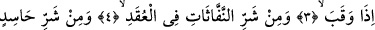
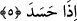
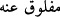

SABÂHIN RABBİNE
SIĞINIRIM!
Bismillâhirrahmânirrahîm
1. De ki: Sabâhın Rabbine sığınırım!
2. Yarattığı şeylerin şerrinden,
3. Karanlığı çöktüğü zaman gecenin şerrinden,
4. Düğümlere üfürüp büyü yapan üfürükçülerin şerrinden,
5. Ve kıskandığı vakit kıskanç kişinin şerrinden!
“Felak” ayırmak anlamına olup sabah demektir. Çünkü gece ondan ayrılır ve kopar.
Burada hazif ve îsâl vardır. Bir şeyin başka bir şeyle örtülüp daha sonra üzeri örtülen
şeyden ayrılıp zâil olmasıyla gerçekleşir. Bu şekilde örtünün zâil olmasıyla üzeri
örtülen şey ortaya çıkar. Gecenin karanlığının üzerinden kalkmasıyla sabah
olmuştur. Meselde denir ki: “O sabahın aydınlığından daha açıktır.” Felak kelimesinin
diğer bir anlamı da mahlûkat’tır. Çünkü mümkinâtın tamâmı Allah katında a‘yân-ı sâbite
olup adem/yokluk karanlığı ile örtülü idi. Allah Teâlâ bu karanlıkları tekevvün ve îcâd
nûru ile izâle edip ilmindeki mükevvenâtı ortaya çıkardı. Böylelikle o mükevvenât oldu.
İstiâze/sığınmanın, karanlıktan sonra nûr, darlıktan sonra genişlik, sökülmeden sonra
yamama mânâlarını ifâde eden felâk kelimesine muzâf kılınmış Rab ismine olmasında,
çok güzel bir vaad vardır. Buna göre sığınan kimse kabul edilir ve sığındığı şeyden
muhâfaza edilir. Benzer durumda olanlardan hatırlatma yapılarak ümîdi güçlendirilir,
ilticâ ve Rabbine sığınma kapısını çalma husûsunda daha gayretli ve ihtimâmlı olmaya
ziyâdesiyle teşvîk edilir.
Demişlerdir ki: Sabah doğunca ağırlık hafifliğe, gam sürûra dönüşür. Rivâyete göre
Yûsuf (a.s.) kuyuya atıldığı zaman dizi çok acıdı ve gece boyunca uyuyamadı. Sabah
yaklaşınca Cebrâil (a.s.) Allah Teâlâ’nın izni ile indi ve kendisinden Rabbine duâ
etmesini istedi ve ona bunu emretti. Yûsuf (a.s.): “Ey Cebrâil sen duâ et, ben âmîn
diyeyim” dedi. Bunun üzerine Cebrâil (a.s.) duâ etti, Yûsuf (a.s.) da âmîn dedi. Allah
Teâlâ ondaki sıkıntıyı giderdi. Yûsuf (a.s.) toparlanınca “Ey Cebrâil şimdi de ben duâ